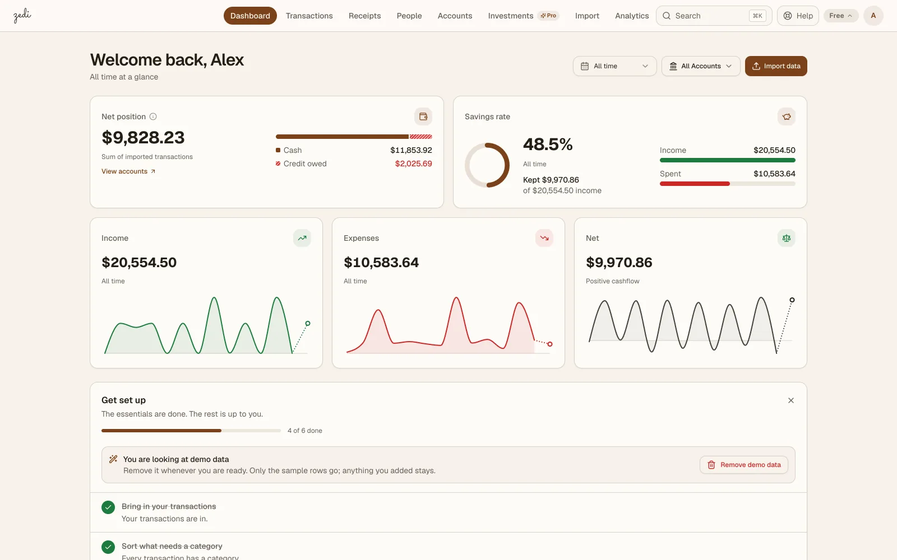
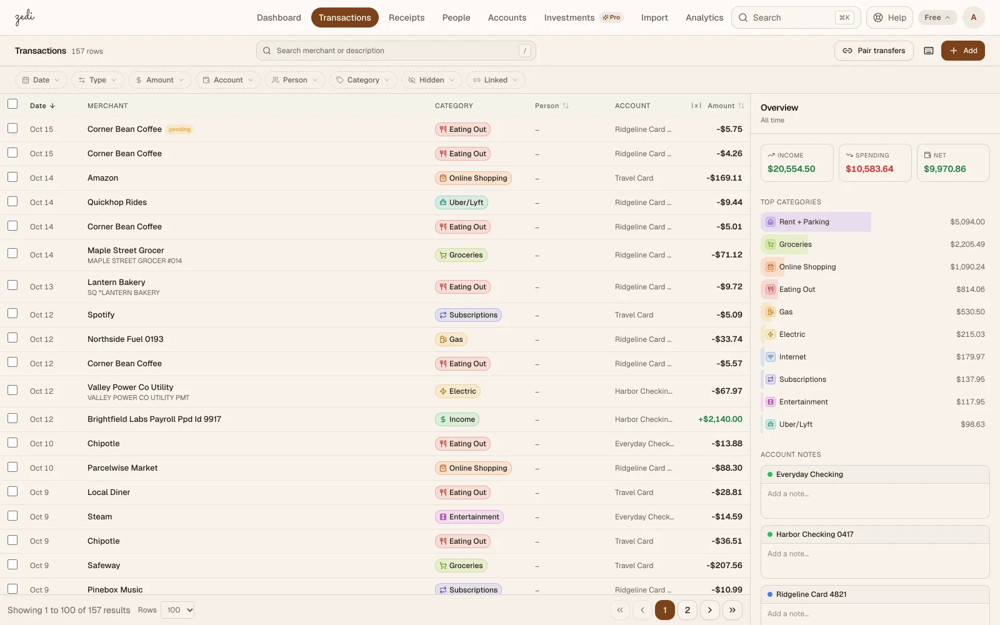
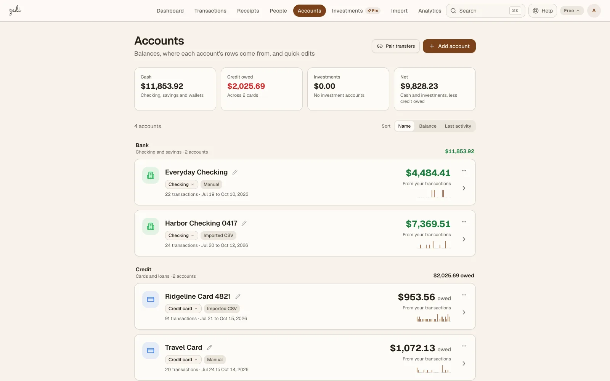
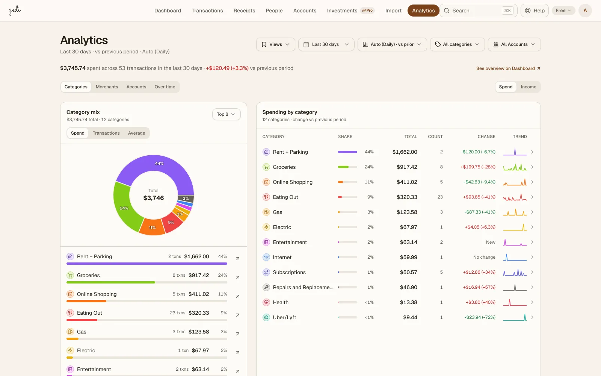
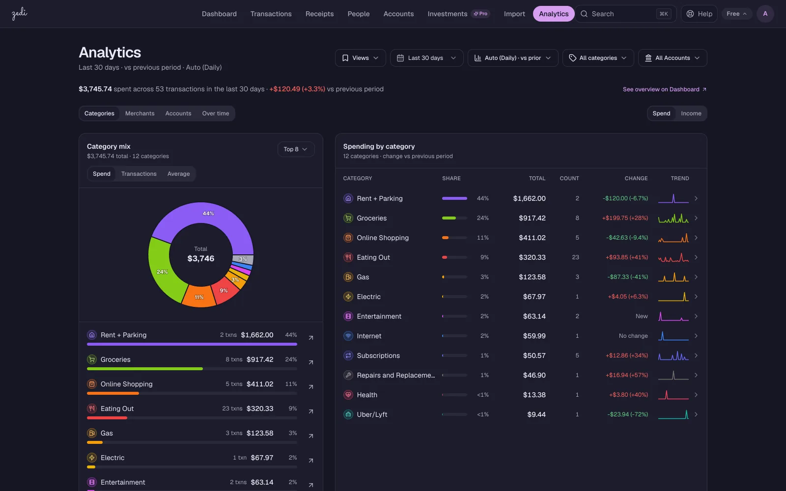
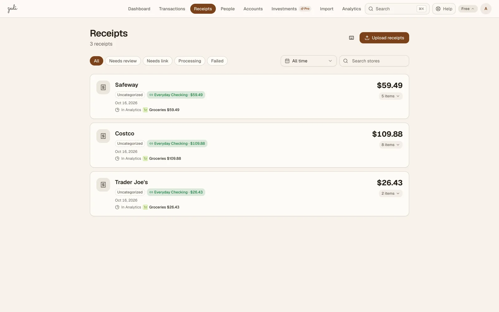
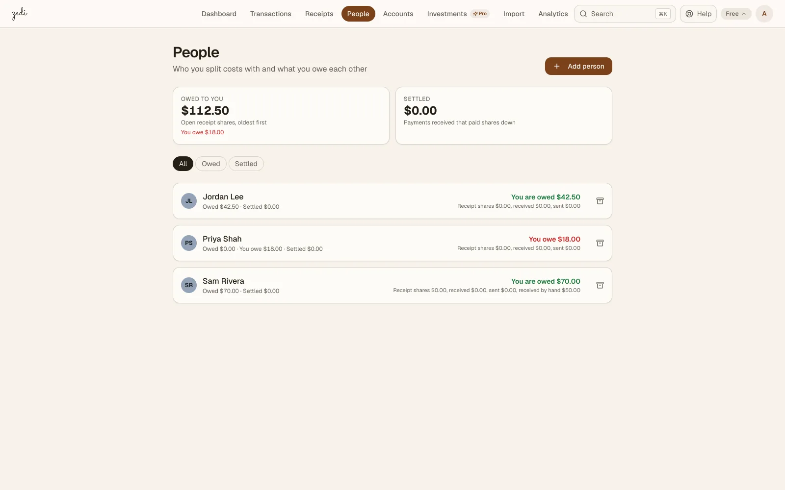
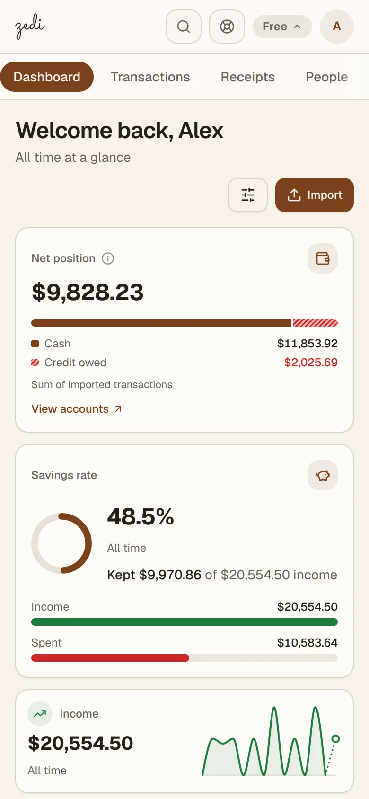
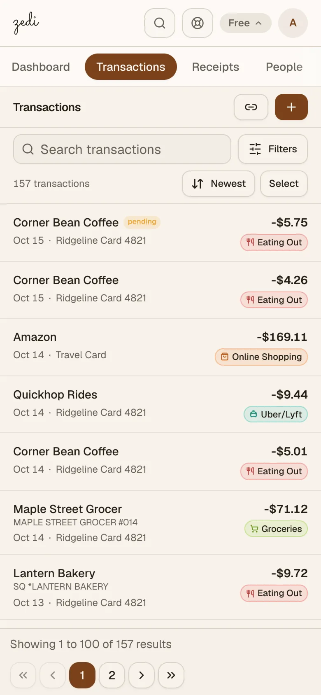

PROJECT / ZEDI
Zedi
A personal finance web app I design and build, live at zedi.dev in open beta. This page is the engineering view: what runs in production, how it is put together, how it ships, and how I build it with Claude Code.
Live · open beta · zedi.dev
- STATUS
- Open betaAnyone can sign up, with no waitlist and no invite
- PLANS
- Free and ProPro is $3.50 a month or $30 a year
- TENANT ISOLATION
- In the databasePostgres row-level security, two connection pools
- ENVIRONMENTS
- 3Production, staging, and a self-hosted personal instance
- SQL MIGRATIONS
- 85Numbered files on the production branch, up to 092
- RUST UNIT TESTS
- 956What cargo test --lib runs, plus 87 frontend test files, on the production branch
Counts taken from the production branch on 2026-10-16.

What it is
Zedi puts a person's checking, credit cards, Venmo and receipts into one list, with nothing counted twice. People bring their money in by uploading the statements their bank already gives them, or on Pro by turning on read-only bank sync through SimpleFIN. From there Zedi skips rows it has already seen, pairs card payments and Venmo cash-outs with the other side, checks PDF statements against their own printed balances, sorts rows into categories, and shows where the money went. It is web only, in US dollars. I build it, and a growth collaborator works with me on growth.
All your money. One honest picture.
Live on production
Only what production runs today. Work that is still on staging is left out.
Statements in, checked
CSV, QFX and PDF statements from a bank or card, with every row reviewed before it is saved. CSV and QFX are free with no limit. PDF statements are read by Claude and checked against their own printed balances, so a bad read gets flagged.
Duplicates skipped, payments paired
A row with the same date, amount and description on an account is skipped, so uploading the same file twice adds nothing. Card payments and Venmo cash-outs pair with the other side, so they do not count as spending or income.
Read-only, through SimpleFIN
It can see money, never move it, and Zedi never sees the bank login. New transactions come in about once a day or on Sync now, and syncing picks up where uploaded statements stop.
Line items, then splits
Photos, screenshots and PDFs are read by Claude into line items, tax and tip. Zedi suggests the matching card charge and the user confirms it; once linked, a mixed receipt splits the charge by item category.
Rules first, AI if asked
450+ built-in rules sort new transactions, and a fix can be remembered for that store. Leftovers are grouped by store, biggest first. AI categories are opt-in: Claude files only what it is at least 70% sure about and never touches rows filed by hand.
Any dates, next to the period before
Income, spending, net and the savings rate on a dashboard and in Analytics, broken down by category, store or account. Totals leave out hidden rows, transfers and paired card payments.
Who owes who
One running balance per person, both ways, free on every plan. Receipts split by item, evenly or by percent. Venmo CSV statements tag payments to the person on the other side, and common Zelle lines match people already in the list.
Sign in, switch, leave
Email or Google sign-in with the email verified first. Switching from Monarch, YNAB or Mint brings the history over in one pass. Records download as JSON plus a CSV, and the account can be deleted from Settings.
Architecture
The browser talks to a Next.js 16 app that serves both the marketing site and the signed-in app. Better Auth runs inside it (email and Google sign-in) and issues JWTs. The Rust API, built on Axum, Tokio and SQLx, accepts only those bearer tokens: it pins the signing algorithm, checks issuer and audience, and verifies each token against the frontend's JWKS.
Figure 1 · How a request moves
Production on Railway. Better Auth keeps its own tables in the same Postgres; every tenant query from the API goes through the pool that cannot bypass row-level security.
Source: Zedi's backend-core and auth skills, docs/public-facts.yaml and docs/product-state-2026-10-12.md (sections 8, 9 and 19), read 2026-10-16.
Tenancy inside Postgres
Isolation between users is enforced by the database, not only by application code. The backend keeps two pools. An admin pool, which can bypass row-level security, runs the migrations at boot and serves the admin routes, the Stripe webhook handler, the background sweepers and a few internal lookups. Every tenant request goes through a second pool whose role cannot bypass it. Handlers take the user id from the verified token, never from a parameter, and open a transaction that sets it with SET LOCAL; the RLS policies read that setting, so a query without it sees no rows. Triggers refuse foreign keys that point at another user's rows, and an audit trigger records changes to transactions.
The integrations
- Claude (Anthropic's API) reads receipt photos and PDF statements and powers the opt-in batch categorization. A user's own Anthropic key, encrypted with AES-256-GCM, lifts the scan and AI limits on any plan.
- SimpleFIN carries read-only bank sync on Pro. Zedi makes two kinds of call, claiming a setup token and reading accounts, and stores one access URL encrypted with AES-256-GCM, with the key kept outside the database. A backend scheduler syncs daily by default, and the bank sync card shows how many of SimpleFIN's 24 reads a day per connection are used.
- Stripe handles Checkout and the customer portal, and its webhooks record the paid plan, monthly or yearly. The one-click 30-day trial is started by Zedi's own API, not through Stripe.
- Cloudflare runs DNS for zedi.dev and stores receipt images in R2 under each user's own prefix. Photos are deleted once their items are read (a receipt that could not be read keeps its photo for up to 30 days, for a retry), and the whole prefix is purged when an account closes.
- Railway hosts the frontend and the API, each built from a Docker image, and the Postgres database. Resend sends the verification and reset email.
Three environments
zedi.dev
Railway deploys every push to main, so only hotfixes and approved promotions land there.
A Railway environment
Runs on a copy of production data and rehearses every promotion before it reaches production.
A self-hosted instance
Runs on a Proxmox VM in my homelab. It never deploys on its own: a release script rolls it forward, or back.
Feature branches merge into a dev integration branch. Dev is promoted to production in slices with my sign-off, after the same slice has run on staging.
Checks on every push
The production branch holds about 101,000 lines of Rust in the backend and about 143,000 lines of TypeScript in the frontend (counted 2026-10-16). GitHub Actions runs on every push and pull request to main and dev:
- Backend: a release build and the unit tests, 956 on the production branch (939
#[test]and 17#[tokio::test]functions in the backend library), plus cargo-audit against published advisories for the Rust dependencies. - Database suites: the backend boots once against a real Postgres 16 to run every migration, then the integration suites, the row-level security isolation tests among them, connect as the app role. A role that could bypass RLS would pass those tests against a leaky policy, so the suites never run as one.
- Frontend: lint, 41 test suites and a production build. The production branch holds 87 frontend test files.
- Public copy as a contract: a claims script checks the landing, pricing and comparison pages against the code they describe. The advertised rule count cannot exceed the seeded rules, scan allowances must equal the backend's limits, and prices must come from the pricing constants.
Migration discipline
Migrations are numbered SQL files, sequential, with no down-migrations, and the backend runs
them at boot. A migration number is an identity: it is never reused across branches. Because
several lanes build at once, one coordinating session hands numbers out and a ledger records
which branch holds each one. Numbers reserved by lanes that never used them leave gaps, which is why the production branch has 85 files
numbered up to 092. A migration file the runner does not
register fails cargo test --lib.
How I build it: an agentic workflow
I build Zedi with Claude Code, and the repository is set up for it. It carries 13 domain skills, one per area (backend and tenancy, auth, import, receipts and OCR, categorization, People, billing, the signed-in UI, the marketing site, deploys, and more) that a session loads before it works in that area. It also carries 6 project subagents with fixed roles: SEO research, page building, legal review of claims, Cloudflare, Railway, and CRM reporting.
- Lanes and a commander. Parallel work runs in lanes, each a branch in its own git worktree with its own session. One commander session hands out migration numbers, integrates finished lanes on a merge branch, and checks the result before it moves to dev.
- Frozen contracts. Lanes that touch each other share a contract frozen before they start: API shapes, and even the UI labels another lane will quote. For one API it is a JSON fixture that the backend's integration tests check live responses against.
- Design, then adversarial review. A lane starts from a written design. For the bigger features, competing design angles are judged and the chosen one is written up before code. Once it is built, an adversarial review tries to break it, and its findings are fixed in a recorded review round.
- Gates, then a browser. Type checks, lint, the build, the relevant test suites and the backend unit tests come first. Then the change is checked by hand in a browser on local dev, as a seed or QA account only, at desktop width, at 375 pixels and in dark mode.
- Claims get reviewed too. A page-building agent lists every claim it made, and the legal-review agent clears or blocks those claims before the merge.
- Production stays mine. No agent pushes to main or changes production (Railway, Cloudflare, Stripe, DNS or the production database) without my explicit go for that exact change.
Pricing
Two plans, in US dollars. No ads, and data is never sold: Pro pays the bills.
$0
- Unlimited CSV and QFX files
- 10 receipt scans and 10 PDF scans a month
- Opt-in AI categories for 50 rows a month
- People, every chart and rule
$3.50 a month, or $30 a year
- Read-only bank sync through SimpleFIN, which bills its own $1.50 a month
- Unlimited receipt and PDF scans
- Unlimited AI categories
- Bank sync fee: SimpleFIN bills its own $1.50 a month or $15 a year, plus tax, and Zedi adds no markup. Bank sync is $5 a month all in: $3.50 to Zedi for Pro plus $1.50 to SimpleFIN, before tax.
- Trial: try Pro free for 30 days, with 50 receipt and PDF scans. No card to start. Bank sync in the trial still needs your own SimpleFIN subscription.
- Your own key: a user's own Anthropic key lifts the scan and AI limits on any plan, billed by Anthropic.
Screens
A production build on a demo account. Every name, store and amount is made up. Select a screen for the full-size image.






In a phone browser


Sources: every fact on this page comes from Zedi's own records, read 2026-10-16: docs/public-facts.yaml (2026-10-15), docs/product-state-2026-10-12.md (sections 1, 3, 7, 8, 9, 12, 19, 22 and 23), CLAUDE.md, docs/agents.md, the domain skills, the CI workflow, and file, test, skill and agent counts on the production branch. The repository is private.